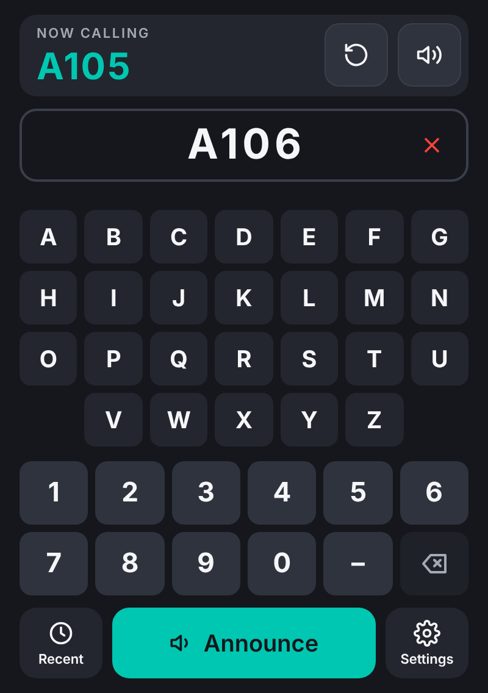
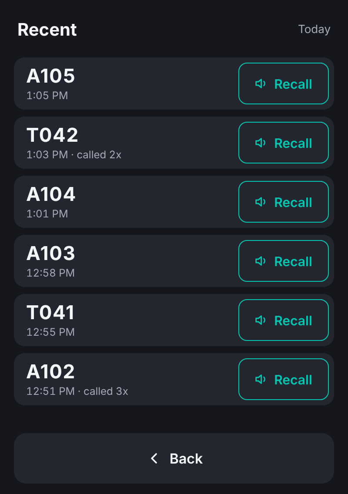
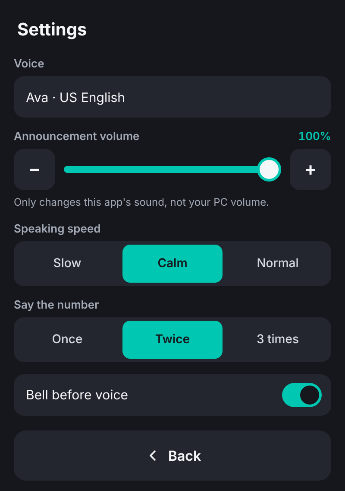
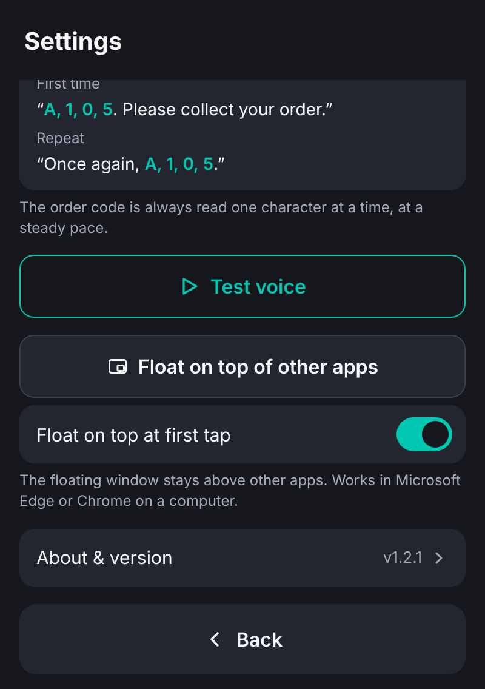
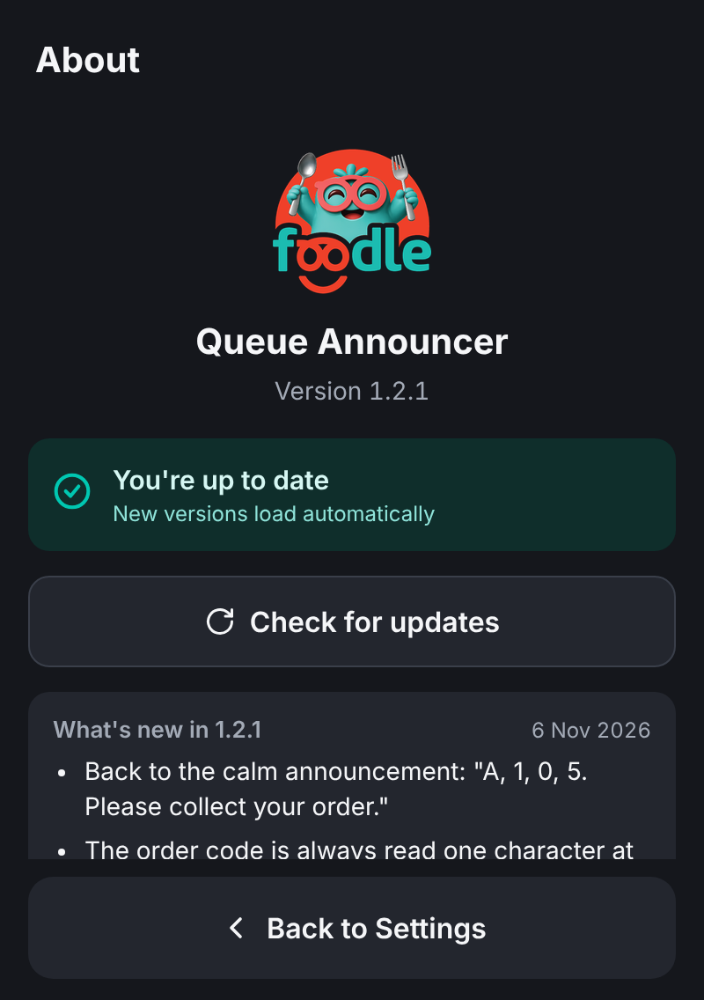

Staff guide: how to call out orders at the counter
For version 1.2.1 and laterYou key in the order code from the receipt. The app rings the Foodle bell, then a clear voice reads the code one character at a time, so customers know their food is ready.

1 2 3 4 5 6 7 8 9 10Main screen

Recent screen
Tap Recent at the bottom left of the main screen. It lists every order called today on this PC, newest first, with the time and how many times it was called.
The list starts fresh each day. Swipe up and down to see older orders.
The first time you tap the app after opening it, the announcer moves into a small floating window that stays on top of other apps. You can use the PC for other work and the keypad is always within reach.

Settings (top)

Settings (scroll down)
| Setting | What it does |
|---|---|
| Voice | Shows the voice in use (Ava). If a PC doesn't have Ava, a similar voice is used and a note suggests updating Edge. |
| Announcement volume | Makes the bell and voice louder or softer for this app only, not for the whole PC. Use − and +. |
| Speaking speed | Slow, Calm or Normal for the words. The order code is always read at the same steady pace. |
| Say the number | Once, Twice or 3 times. |
| Bell before voice | Turns the bell on or off. Bell sound picks which bell; tap Test to hear it. |
| Test voice | Plays the full announcement so you can check the sound. |
| Float on top | Opens the floating window by hand. The switch below it controls whether it opens by itself at the first tap. |
| About & version | Shows the version, whether it's up to date, and what changed in each version. |
Each PC remembers its own settings, so a busy counter can be louder than a quiet one.
| Problem | Try this |
|---|---|
| No sound at all | Check the Mute icon on the main screen isn't red. Check Settings → Announcement volume. In Windows, right-click the speaker icon, open Volume mixer, and make sure Edge isn't muted. |
| “The voice didn't play” | The bell worked but the voice didn't start. Check Edge isn't muted, then tap Repeat. If it keeps happening, check the internet connection. |
| Voice sounds robotic | The app isn't running in Edge, or Edge is out of date. Open it from the Queue Announcer icon and update Edge. |
| No floating window | It only works in Edge (or Chrome) on a computer. Open Settings → Float on top of other apps. |
| Announcer disappeared | The small tab was probably closed. Open the app again from its desktop icon. |
| Want the latest version now | Close the app completely and open it again. Check Settings → About & version. |

About & version
Go to Settings → About & version. It shows the version number, whether the app is up to date, and a list of what changed. Older versions stay listed underneath, so you can always see the history.
| Call an order | Type code → Announce |
| Say it again | Repeat (top) or Recent → Recall |
| Silence | Mute (top right) |
| Fix typing | ⌫ last character, ✕ all |